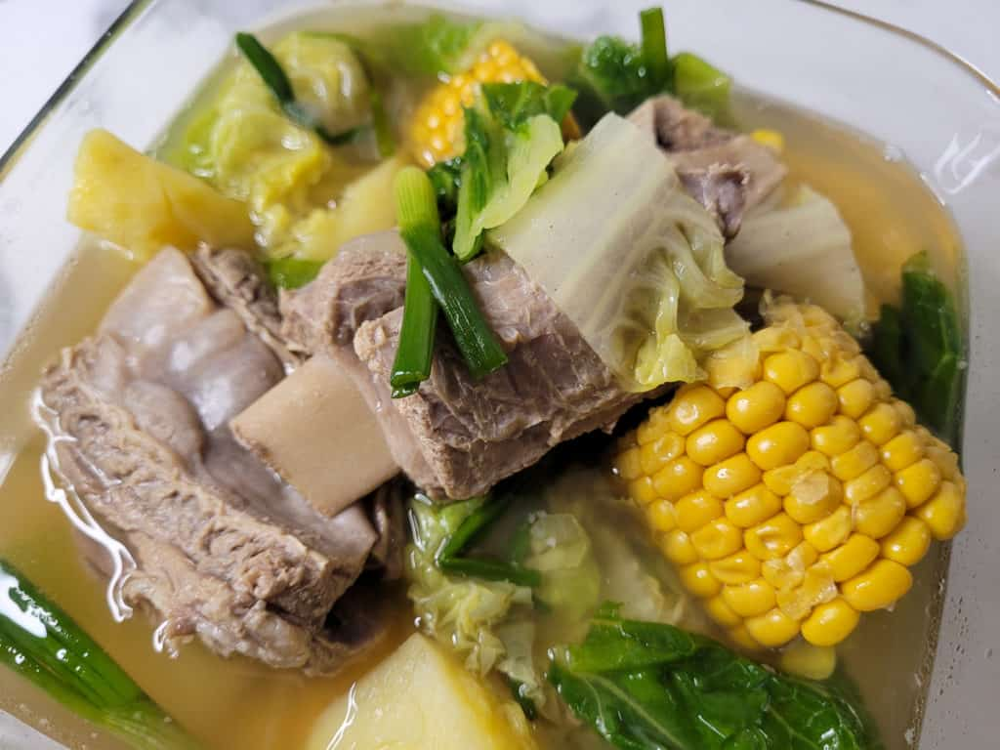

| Nilaga  | |
|---|---|
| Ingredients: 1 kilogram (~ 2 pounds) beef or pork ribs, thawed and sliced ½ napa cabbage, sliced in chunks 1 tablespoon black peppercorn 2 corn on the cob, each cob sliced in 4 pieces 2 onions, roughly chopped in large pieces 2 medium potatoes, cubed 3-4 tablespoon fish sauce 1½ - 2 liters water (for boiling) salt & pepper to taste |
Recipe: Wash the ribs in cold water several times. Add the water to a pot and bring it to a low simmer. Submerge them in the water and let simmer for 30 minutes skimming scum off the top. Add peppercorn and onions and continue to simmer for 1.5 hours (up to 2 hours). If using raw corn on cob: Add corn and continue to simmer for 30 more minutes. Add potatoes and simmer 10 minutes If using parboiled corn on cob: Add the parboiled corn on cob pieces with the potatoes Add fish sauce, cabbage, and green onions plus the salt and pepper. Then cook for 5 minutes. Turn off the heat and remove from the stove when finished. |